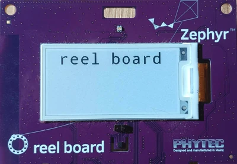

Getting Started Guide
Follow this guide to:
Set up a command-line Zephyr development environment on Ubuntu, macOS, or Windows (instructions for other Linux distributions are discussed in Install Linux Host Dependencies)
Get the source code
Build, flash, and run a sample application
Select and Update OS
Click the operating system you are using.
This guide covers Ubuntu version 24.04 LTS and later. If you are using a different Linux distribution see Install Linux Host Dependencies.
sudo apt update
sudo apt upgrade
On macOS Mojave or later, select System Preferences > Software Update. Click Update Now if necessary.
On other versions, see this Apple support topic.
Note
x86-64 macOS is not supported.
Select Start > Settings > Update & Security > Windows Update. Click Check for updates and install any that are available.
Install dependencies
Next, you’ll install some host dependencies using your package manager.
The current minimum required version for the main dependencies are:
Tool |
Min. Version |
|---|---|
3.20.5 |
|
3.12 |
|
1.4.6 |
Use
aptto install the required dependencies:sudo apt install --no-install-recommends git cmake ninja-build gperf \ ccache dfu-util device-tree-compiler wget python3-dev python3-venv python3-tk \ xz-utils file make gcc gcc-multilib g++-multilib libsdl2-dev libmagic1
Note
Due to the unavailability of
gcc-multilibandg++-multilibon AArch64 (ARM64) systems, you may need to omit them from the list of packages to install.Verify the versions of the main dependencies installed on your system by entering:
cmake --version python3 --version dtc --version
Check those against the versions in the table in the beginning of this section. Refer to the Install Linux Host Dependencies page for additional information on updating the dependencies manually.
Install Homebrew:
/bin/bash -c "$(curl -fsSL https://raw.githubusercontent.com/Homebrew/install/HEAD/install.sh)"
After the Homebrew installation script completes, follow the on-screen instructions to add the Homebrew installation to the path.
(echo; echo 'eval "$(/opt/homebrew/bin/brew shellenv)"') >> ~/.zprofile source ~/.zprofile
Use
brewto install the required dependencies:brew install cmake ninja gperf python3 python-tk ccache qemu dtc libmagic wget openocd
Add the Homebrew Python folder to the path, in order to be able to execute
pythonandpipas wellpython3andpip3.(echo; echo 'export PATH="'$(brew --prefix)'/opt/python/libexec/bin:$PATH"') >> ~/.zprofile source ~/.zprofile
Note
Due to issues finding executables, the Zephyr Project doesn’t currently support application flashing using the Windows Subsystem for Linux (WSL) (WSL).
Therefore, we don’t recommend using WSL when getting started.
In modern version of Windows (10 and later) it is recommended to install the Windows Terminal
application from the Microsoft Store. Instructions are provided for a cmd.exe or
PowerShell command prompts.
These instructions rely on Windows’ official package manager, winget.
If using winget isn’t an option, you can install dependencies from their
respective websites and ensure the command line tools are on your
PATH environment variable.
In modern Windows versions, winget is already pre-installed by default. You can verify that this is the case by typing
wingetin a terminal window. If that fails, you can then install winget.Open a Command Prompt (
cmd.exe) or PowerShell terminal window. To do so, press the Windows key, typecmd.exeor PowerShell and click on the result.Use
wingetto install the required dependencies:winget install Kitware.CMake Ninja-build.Ninja oss-winget.gperf Python.Python.3.12 Git.Git oss-winget.dtc wget 7zip.7zip
Close the terminal window.
Note
You may need to add the 7zip installation folder to your PATH.
Get Zephyr and install Python dependencies
Next, clone Zephyr and its modules into a new west workspace. In the following instructions the name zephyrproject
is used for the workspace, however in practice its name and location can be freely
chosen. You’ll also install Zephyr’s additional Python dependencies in a
Python virtual environment.
Create a new virtual environment:
python3 -m venv ~/zephyrproject/.venv
Activate the virtual environment:
source ~/zephyrproject/.venv/bin/activate
Once activated your shell will be prefixed with
(.venv). The virtual environment can be deactivated at any time by runningdeactivate.Note
Remember to activate the virtual environment every time you start working.
Install west:
pip install west
Get the Zephyr source code:
west init ~/zephyrproject cd ~/zephyrproject west update
Export a Zephyr CMake package. This allows CMake to automatically load boilerplate code required for building Zephyr applications.
west zephyr-exportInstall Python dependencies using
west packages.west packages pip --install
Note
This could downgrade or upgrade west itself.
Create a new virtual environment:
python3 -m venv ~/zephyrproject/.venv
Activate the virtual environment:
source ~/zephyrproject/.venv/bin/activate
Once activated your shell will be prefixed with
(.venv). The virtual environment can be deactivated at any time by runningdeactivate.Note
Remember to activate the virtual environment every time you start working.
Install west:
pip install west
Get the Zephyr source code:
west init ~/zephyrproject cd ~/zephyrproject west update
Export a Zephyr CMake package. This allows CMake to automatically load boilerplate code required for building Zephyr applications.
west zephyr-exportInstall Python dependencies using
west packages.west packages pip --install
Note
This could downgrade or upgrade west itself.
Open a
cmd.exeor PowerShell terminal window as a regular userCreate a new virtual environment:
cd %HOMEPATH% python -m venv zephyrproject\.venv
cd $Env:HOMEPATH python -m venv zephyrproject\.venv
Activate the virtual environment:
Note
Python’s virtual environment activation in PowerShell requires running a script itself, which needs to be allowed.
Set-ExecutionPolicy -ExecutionPolicy RemoteSigned -Scope CurrentUser
zephyrproject\.venv\Scripts\activate.bat
zephyrproject\.venv\Scripts\Activate.ps1
Once activated your shell will be prefixed with
(.venv). The virtual environment can be deactivated at any time by runningdeactivate.Note
Remember to activate the virtual environment every time you start working.
Install west:
pip install west
Get the Zephyr source code:
west init zephyrproject cd zephyrproject west updateExport a Zephyr CMake package. This allows CMake to automatically load boilerplate code required for building Zephyr applications.
west zephyr-export
Install Python dependencies using
west packages.cmd /c zephyr\scripts\utils\west-packages-pip-install.cmd
python -m pip install @((west packages pip) -split ' ')
Note
This could downgrade or upgrade west itself.
Install the Zephyr SDK
The Zephyr Software Development Kit (SDK) contains toolchains for each of Zephyr’s supported architectures, which include a compiler, assembler, linker and other programs required to build Zephyr applications.
It also contains additional host tools, such as custom QEMU and OpenOCD builds that are used to emulate, flash and debug Zephyr applications.
Install the Zephyr SDK using the west sdk install.
cd ~/zephyrproject/zephyr west sdk install
Tip
Using the command options, you can specify the SDK installation destination
and which architecture of toolchains to install.
See west sdk install --help for details.
Install the Zephyr SDK using the west sdk install.
cd ~/zephyrproject/zephyr west sdk install
Tip
Using the command options, you can specify the SDK installation destination
and which architecture of toolchains to install.
See west sdk install --help for details.
Install the Zephyr SDK using the west sdk install.
cd %HOMEPATH%\zephyrproject\zephyr west sdk installcd $Env:HOMEPATH\zephyrproject\zephyr west sdk install
Tip
Using the command options, you can specify the SDK installation destination
and which architecture of toolchains to install.
See west sdk install --help for details.
Note
If you want to install Zephyr SDK without using the west sdk command,
please see Zephyr SDK installation.
Build the Blinky Sample
Note
Blinky is compatible with most, but not all, Supported Boards and Shields. If your board does not meet Blinky’s Requirements, then Hello World is a good alternative.
If you are unsure what name west uses for your board, west boards
can be used to obtain a list of all boards Zephyr supports.
Build the Blinky with west build, changing
<your-board-name> appropriately for your board:
cd ~/zephyrproject/zephyr
west build -p always -b <your-board-name> samples/basic/blinky
cd ~/zephyrproject/zephyr
west build -p always -b <your-board-name> samples/basic/blinky
cd %HOMEPATH%\zephyrproject\zephyr
west build -p always -b <your-board-name> samples\basic\blinky
cd $Env:HOMEPATH\zephyrproject\zephyr
west build -p always -b <your-board-name> samples\basic\blinky
The -p always option forces a pristine build, and is recommended for new
users. Users may also use the -p auto option, which will use
heuristics to determine if a pristine build is required, such as when building
another sample.
Note
A board may contain one or multiple SoCs, Also, each SoC may contain one or
more CPU clusters.
When building for such boards it is necessary to specify the SoC or CPU
cluster for which the sample must be built.
For example to build Blinky for the cpuapp core on
the nRF5340 DK the board must be provided as:
nrf5340dk/nrf5340/cpuapp. See also Board terminology for more
details.
Flash the Sample
Connect your board, usually via USB, and turn it on if there’s a power switch. If in doubt about what to do, check your board’s page in Supported Boards and Shields.
Then flash the sample using west flash:
west flash
Note
You may need to install additional host tools
required by your board. The west flash command will print an error if any
required dependencies are missing.
Note
When using Linux, you may need to configure udev rules the first time of using a debug probe. Please also see Setting udev rules.
If you’re using blinky, the LED will start to blink as shown in this figure:
{kind=link}

Phytec reel_board running blinky
Next Steps
Here are some next steps for exploring Zephyr:
Try other Samples and Demos
Learn about Application Development and the west tool
Find out about west’s flashing and debugging features, or more about Flashing and Hardware Debugging in general
Check out Beyond the Getting Started Guide for additional setup alternatives and ideas
Discover Resources for getting help from the Zephyr community
Troubleshooting Installation
Here are some tips for fixing some issues related to the installation process.
Double Check the Zephyr SDK Variables When Updating
When updating Zephyr SDK, check whether the ZEPHYR_TOOLCHAIN_VARIANT
or ZEPHYR_SDK_INSTALL_DIR environment variables are already set.
See Updating the Zephyr SDK toolchain for more information.
For more information about these environment variables in Zephyr, see Important Environment Variables.
Asking for Help
You can ask for help on a mailing list or on Discord. Please send bug reports and feature requests to GitHub.
Mailing Lists: users@lists.zephyrproject.org is usually the right list to ask for help. Search archives and sign up here.
Discord: You can join with this Discord invite.
GitHub: Use GitHub issues for bugs and feature requests.
How to Ask
Important
Please search this documentation and the mailing list archives first. Your question may have an answer there.
Don’t just say “this isn’t working” or ask “is this working?”. Include as much detail as you can about:
What you want to do
What you tried (commands you typed, etc.)
What happened (output of each command, etc.)
Use Copy/Paste
Please copy/paste text instead of taking a picture or a screenshot of it. Text includes source code, terminal commands, and their output.
Doing this makes it easier for people to help you, and also helps other users search the archives. Unnecessary screenshots exclude vision impaired developers; some are major Zephyr contributors. Accessibility has been recognized as a basic human right by the United Nations.
When copy/pasting more than 5 lines of computer text into Discord or Github, create a snippet using three backticks to delimit the snippet.